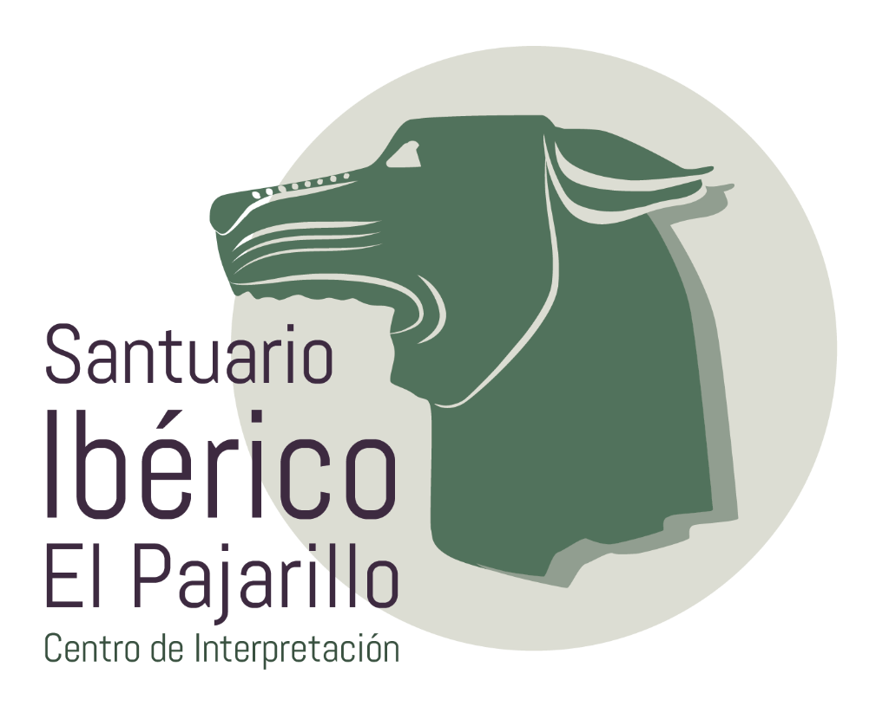

Tu navegador no soporta vídeo HTML5.

SANTUARIO IBÉRICO DE “EL PAJARILLO”
👆
Toca la pantalla para comenzar
Santuario Ibérico de “El Pajarillo”
📺 Salvapantallas
← Volver a la Selección de Vídeos
Cargando contenido...
Tu pantalla o navegador no soporta reproducción de vídeo HTML5.
⏸
↺
🔊
00:00
/
00:00